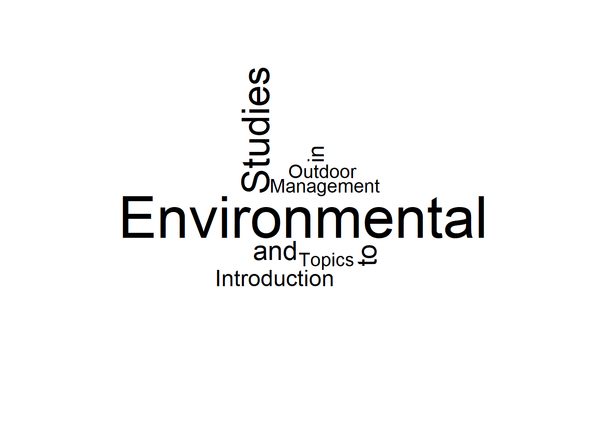
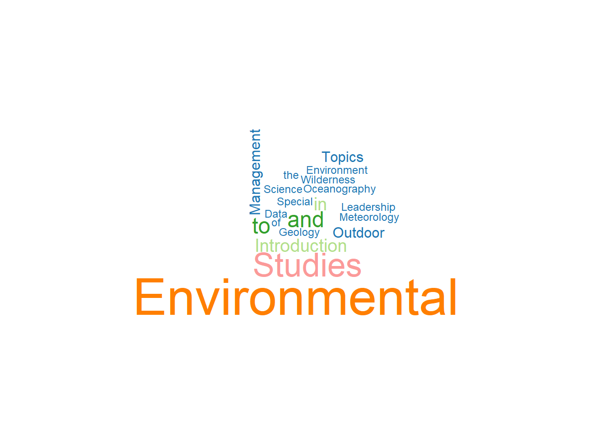

library(tidyverse)
library(dplyr)
library(knitr)
library(kableExtra)
library(lubridate)
library(stringr)
library(readr)Textual Data
Textual Data
Bringing in Packages
Sourcing Data
url <- "https://raw.githubusercontent.com/DyerlabTeaching/Textual-Data/refs/heads/main/data/ENVSclasses.txt?token=GHSAT0AAAAAACWO27UIA46V72P7DBZEP5EKZYZFFXQ"Creating Textual Variables
paste("I","would","like","a","nap")[1] "I would like a nap"paste("I","would","like","a","nap", sep = "-")[1] "I-would-like-a-nap"paste("I","would","like","a","nap", 42, "!", sep = " ")[1] "I would like a nap 42 !"x <- "birds"
y <- "dogs"
vec <- c( x, y )
print(length( vec ))[1] 2print(str_length( vec ))[1] 5 4z <- LETTERS[1:10]
print(z) [1] "A" "B" "C" "D" "E" "F" "G" "H" "I" "J"paste(z, sep = "/" ) [1] "A" "B" "C" "D" "E" "F" "G" "H" "I" "J"str_c(z) [1] "A" "B" "C" "D" "E" "F" "G" "H" "I" "J"print(str_c(z)) [1] "A" "B" "C" "D" "E" "F" "G" "H" "I" "J"Finding things in strings of charecters
str_detect( z, "D") [1] FALSE FALSE FALSE TRUE FALSE FALSE FALSE FALSE FALSE FALSE#note that stringer detect is case sensitive
str_detect( z, "d") [1] FALSE FALSE FALSE FALSE FALSE FALSE FALSE FALSE FALSE FALSEstr_locate(z, "D") start end
[1,] NA NA
[2,] NA NA
[3,] NA NA
[4,] 1 1
[5,] NA NA
[6,] NA NA
[7,] NA NA
[8,] NA NA
[9,] NA NA
[10,] NA NAstr_locate( vec, "o") start end
[1,] NA NA
[2,] 2 2Substitutions
str_sub(z, 3, 4) <- "hey"
print(z, 3) [1] "Ahey" "Bhey" "Chey" "Dhey" "Ehey" "Fhey" "Ghey" "Hhey" "Ihey" "Jhey"str_remove(z, "Chey") [1] "Ahey" "Bhey" "" "Dhey" "Ehey" "Fhey" "Ghey" "Hhey" "Ihey" "Jhey"Regular Expressions
- Make a graphical display of the number of coursed in ENVS by course level 100, 200, ect.
- Make a wordcloud from the titles
envs <- readLines(url)
class(envs)[1] "character"head( envs, 5)[1] "ENVS 101. Introduction to Environmental Studies I. 3 Hours."
[2] "Semester course; 3 lecture hours. 3 credits. Enrollment is restricted to"
[3] "environmental studies majors. Study of contemporary issues related to"
[4] "environmental studies including sustainability, biological conservation,"
[5] "global change and an overview of the core earth systems." index <- str_detect(envs, "ENVS")
envs[index] [1] "ENVS 101. Introduction to Environmental Studies I. 3 Hours."
[2] "ENVS 102. Introduction to Environmental Studies II. 3 Hours."
[3] "Semester course; 3 lecture hours. 3 credits. Prerequisite: ENVS 101 or"
[4] "ENVS 105. Physical Geology. 3 Hours."
[5] "ENVS 201. Earth System Science. 3 Hours."
[6] "ENVS 222. Electronic Portfolios. 1 Hour."
[7] "ENVS 260. Outdoor Leadership. 3 Hours."
[8] "ENVS 265. Paths to Environmental Leadership. 2 Hours."
[9] "Semester course; 2 lecture hours. 2 credits. Prerequisites: ENVS 101"
[10] "and ENVS 102, both with a minimum grade of B. This course focuses"
[11] "ENVS 291. Special Topics in Environmental Studies. 1-4 Hours."
[12] "ENVS 300. Sustainable Societies: James River Basin. 3 Hours."
[13] "ENVS 301. Introduction to Meteorology. 3 Hours."
[14] "ENVS 310. Introduction to Oceanography. 3 Hours."
[15] "ENVS 311. Politics of the Environment. 3 Hours."
[16] "ENVS 314. Human-Environment Interactions: Foundations and"
[17] "ENVS 315. Energy and the Environment. 3 Hours."
[18] "ENVS 321. Cartography. 3 Hours."
[19] "ENVS 330. Environmental Pollution. 3 Hours."
[20] "ENVS 332. Environmental Management. 3 Hours."
[21] "ENVS 335. Environmental Geology. 3 Hours."
[22] "Semester course; 3 lecture hours. 3 credits. Prerequisite: ENVS 105"
[23] "ENVS 343. Data Literacy. 4 Hours."
[24] "Semester course; 4 lecture hours. 4 credits. Prerequisites: ENVS 102"
[25] "ENVS 355. Water. 3 Hours."
[26] "ENVS 330 or permission of instructor. The course takes an ecosystem"
[27] "ENVS 360. Outdoor Programming and Event Management. 3 Hours."
[28] "ENVS 361. Outdoor Team Building and Group Facilitation. 3 Hours."
[29] "ENVS 368. Nature Writing. 3 Hours."
[30] "ENVS 370. Applications of Conservation Science. 3 Hours."
[31] "Semester course; 3 lecture hours. 3 credits. Prerequisite: ENVS 343."
[32] "ENVS 391. Special Topics in Environmental Studies. 1-4 Hours."
[33] "ENVS 401. Meteorology and Climatology. 3 Hours."
[34] "ENVS 411. Oceanography. 3 Hours."
[35] "ENVS 421. Environmental Data Visualization. 3 Hours."
[36] "ENVS 430. Invasive Species Management. 3 Hours."
[37] "ENVS 460. Wilderness First Responder. 3 Hours."
[38] "ENVS 461. Wilderness Policy and Practice. 3 Hours."
[39] "ENVS 490. Research Seminar in Environmental Studies. 3 Hours."
[40] "ENVS 491. Topics in Environmental Studies. 1-4 Hours."
[41] "ENVS 492. Independent Study. 1-3 Hours."
[42] "ENVS 493. Environmental Studies Internship. 1-3 Hours."
[43] "ENVS 499. Environmental Studies Capstone Experience. 0 Hours."
[44] "Semester course; variable hours. 0 credits. Corequisite: ENVS 490,"
[45] "ENVS 491 (when topics implement core competencies required for a"
[46] "Environmental Studies), ENVS 492 or ENVS 493. Enrollment restricted to"
[47] "ENVS 105, an optional laboratory course consisting of experiments and"
[48] "activities related to ENVS 105."
[49] "Semester course; 2 laboratory hours. 1 credit. Corequisite: ENVS 335."
[50] "Required for environmental science majors enrolled in ENVS 335; optional"
[51] "Laboratory exercises coordinated with ENVS 335 lectures."
[52] "ENVS 401. A series of laboratory and field experiments designed to" envs101 <- envs[1]
str_view(envs101)[1] │ ENVS 101. Introduction to Environmental Studies I. 3 Hours.str_view(envs101,"ENVS")[1] │ <ENVS> 101. Introduction to Environmental Studies I. 3 Hours.str_view(envs101, "[:digit:]{3}")[1] │ ENVS <101>. Introduction to Environmental Studies I. 3 Hours.str_view( envs101, "[:punct:]")[1] │ ENVS 101<.> Introduction to Environmental Studies I<.> 3 Hours<.>str_view( envs101, "[:alpha:]")[1] │ <E><N><V><S> 101. <I><n><t><r><o><d><u><c><t><i><o><n> <t><o> <E><n><v><i><r><o><n><m><e><n><t><a><l> <S><t><u><d><i><e><s> <I>. 3 <H><o><u><r><s>.str_view( envs101, "[:upper:]")[1] │ <E><N><V><S> 101. <I>ntroduction to <E>nvironmental <S>tudies <I>. 3 <H>ours.str_view( envs101, "[:space:]")[1] │ ENVS< >101.< >Introduction< >to< >Environmental< >Studies< >I.< >3< >Hours.#we are looking for 4 uppercase letters and then a space and then 3 digits
str_view(envs, "[:alpha:]{4}[:digit:]{3}")
str_view(envs, "[A-Z]{4} [0-9]{3}") [1] │ <ENVS 101>. Introduction to Environmental Studies I. 3 Hours.
[6] │ <ENVS 102>. Introduction to Environmental Studies II. 3 Hours.
[7] │ Semester course; 3 lecture hours. 3 credits. Prerequisite: <ENVS 101> or
[12] │ <ENVS 105>. Physical Geology. 3 Hours.
[16] │ environment. An optional laboratory, <ENVZ 105>, may be taken with this
[18] │ <ENVS 201>. Earth System Science. 3 Hours.
[23] │ <ENVS 222>. Electronic Portfolios. 1 Hour.
[29] │ <ENVS 260>. Outdoor Leadership. 3 Hours.
[36] │ <ENVS 265>. Paths to Environmental Leadership. 2 Hours.
[37] │ Semester course; 2 lecture hours. 2 credits. Prerequisites: <ENVS 101>
[38] │ and <ENVS 102>, both with a minimum grade of B. This course focuses
[47] │ <ENVS 291>. Special Topics in Environmental Studies. 1-4 Hours.
[52] │ <ENVS 300>. Sustainable Societies: James River Basin. 3 Hours.
[57] │ <ENVS 301>. Introduction to Meteorology. 3 Hours.
[64] │ <ENVS 310>. Introduction to Oceanography. 3 Hours.
[72] │ <ENVS 311>. Politics of the Environment. 3 Hours.
[78] │ its impact on policy outcomes. Crosslisted as: <POLI 311>.
[79] │ <ENVS 314>. Human-Environment Interactions: Foundations and
[86] │ theory of population biology. Crosslisted as: <INTL 314>.
[87] │ <ENVS 315>. Energy and the Environment. 3 Hours.
... and 58 more#match the above specification only at the start of a line
str_view(envs, "^[A-Z]{4} [0-9]{3}") [1] │ <ENVS 101>. Introduction to Environmental Studies I. 3 Hours.
[6] │ <ENVS 102>. Introduction to Environmental Studies II. 3 Hours.
[12] │ <ENVS 105>. Physical Geology. 3 Hours.
[18] │ <ENVS 201>. Earth System Science. 3 Hours.
[23] │ <ENVS 222>. Electronic Portfolios. 1 Hour.
[29] │ <ENVS 260>. Outdoor Leadership. 3 Hours.
[36] │ <ENVS 265>. Paths to Environmental Leadership. 2 Hours.
[47] │ <ENVS 291>. Special Topics in Environmental Studies. 1-4 Hours.
[52] │ <ENVS 300>. Sustainable Societies: James River Basin. 3 Hours.
[57] │ <ENVS 301>. Introduction to Meteorology. 3 Hours.
[64] │ <ENVS 310>. Introduction to Oceanography. 3 Hours.
[72] │ <ENVS 311>. Politics of the Environment. 3 Hours.
[79] │ <ENVS 314>. Human-Environment Interactions: Foundations and
[87] │ <ENVS 315>. Energy and the Environment. 3 Hours.
[93] │ <ENVS 321>. Cartography. 3 Hours.
[95] │ <STAT 208>, or higher level MATH or STAT course. This course provides
[101] │ <ENVS 330>. Environmental Pollution. 3 Hours.
[103] │ <BIOL 152>. The study of pollution in the environment with emphasis on the
[105] │ <ENVS 332>. Environmental Management. 3 Hours.
[113] │ <ENVS 335>. Environmental Geology. 3 Hours.
... and 29 more#This chunk is not working
pattern <- "^[A-Z]{4} [0-9]{3}.+[0-9] Hours.$"
grepl( pattern, envs ) -> idx
titles <- envs[idx]
titles [1] "ENVS 101. Introduction to Environmental Studies I. 3 Hours."
[2] "ENVS 102. Introduction to Environmental Studies II. 3 Hours."
[3] "ENVS 105. Physical Geology. 3 Hours."
[4] "ENVS 201. Earth System Science. 3 Hours."
[5] "ENVS 260. Outdoor Leadership. 3 Hours."
[6] "ENVS 265. Paths to Environmental Leadership. 2 Hours."
[7] "ENVS 291. Special Topics in Environmental Studies. 1-4 Hours."
[8] "ENVS 300. Sustainable Societies: James River Basin. 3 Hours."
[9] "ENVS 301. Introduction to Meteorology. 3 Hours."
[10] "ENVS 310. Introduction to Oceanography. 3 Hours."
[11] "ENVS 311. Politics of the Environment. 3 Hours."
[12] "ENVS 315. Energy and the Environment. 3 Hours."
[13] "ENVS 321. Cartography. 3 Hours."
[14] "ENVS 330. Environmental Pollution. 3 Hours."
[15] "ENVS 332. Environmental Management. 3 Hours."
[16] "ENVS 335. Environmental Geology. 3 Hours."
[17] "ENVS 343. Data Literacy. 4 Hours."
[18] "ENVS 355. Water. 3 Hours."
[19] "ENVS 360. Outdoor Programming and Event Management. 3 Hours."
[20] "ENVS 361. Outdoor Team Building and Group Facilitation. 3 Hours."
[21] "ENVS 368. Nature Writing. 3 Hours."
[22] "ENVS 370. Applications of Conservation Science. 3 Hours."
[23] "ENVS 391. Special Topics in Environmental Studies. 1-4 Hours."
[24] "ENVS 401. Meteorology and Climatology. 3 Hours."
[25] "ENVS 411. Oceanography. 3 Hours."
[26] "ENVS 421. Environmental Data Visualization. 3 Hours."
[27] "ENVS 430. Invasive Species Management. 3 Hours."
[28] "ENVS 460. Wilderness First Responder. 3 Hours."
[29] "ENVS 461. Wilderness Policy and Practice. 3 Hours."
[30] "ENVS 490. Research Seminar in Environmental Studies. 3 Hours."
[31] "ENVS 491. Topics in Environmental Studies. 1-4 Hours."
[32] "ENVS 492. Independent Study. 1-3 Hours."
[33] "ENVS 493. Environmental Studies Internship. 1-3 Hours."
[34] "ENVS 499. Environmental Studies Capstone Experience. 0 Hours." raw <- str_split(titles, pattern="\\.", simplify = TRUE)
dim(raw)[1] 34 4head(raw) [,1] [,2] [,3] [,4]
[1,] "ENVS 101" " Introduction to Environmental Studies I" " 3 Hours" ""
[2,] "ENVS 102" " Introduction to Environmental Studies II" " 3 Hours" ""
[3,] "ENVS 105" " Physical Geology" " 3 Hours" ""
[4,] "ENVS 201" " Earth System Science" " 3 Hours" ""
[5,] "ENVS 260" " Outdoor Leadership" " 3 Hours" ""
[6,] "ENVS 265" " Paths to Environmental Leadership" " 2 Hours" "" program <- str_split( raw[,1], pattern=" ", simplify=TRUE)[,1]
program [1] "ENVS" "ENVS" "ENVS" "ENVS" "ENVS" "ENVS" "ENVS" "ENVS" "ENVS" "ENVS"
[11] "ENVS" "ENVS" "ENVS" "ENVS" "ENVS" "ENVS" "ENVS" "ENVS" "ENVS" "ENVS"
[21] "ENVS" "ENVS" "ENVS" "ENVS" "ENVS" "ENVS" "ENVS" "ENVS" "ENVS" "ENVS"
[31] "ENVS" "ENVS" "ENVS" "ENVS"code <- str_split( raw[,1], pattern=" ", simplify=TRUE)[,2]
code <- as.numeric( code )
code [1] 101 102 105 201 260 265 291 300 301 310 311 315 321 330 332 335 343 355 360
[20] 361 368 370 391 401 411 421 430 460 461 490 491 492 493 499title <- raw[,2]
title [1] " Introduction to Environmental Studies I"
[2] " Introduction to Environmental Studies II"
[3] " Physical Geology"
[4] " Earth System Science"
[5] " Outdoor Leadership"
[6] " Paths to Environmental Leadership"
[7] " Special Topics in Environmental Studies"
[8] " Sustainable Societies: James River Basin"
[9] " Introduction to Meteorology"
[10] " Introduction to Oceanography"
[11] " Politics of the Environment"
[12] " Energy and the Environment"
[13] " Cartography"
[14] " Environmental Pollution"
[15] " Environmental Management"
[16] " Environmental Geology"
[17] " Data Literacy"
[18] " Water"
[19] " Outdoor Programming and Event Management"
[20] " Outdoor Team Building and Group Facilitation"
[21] " Nature Writing"
[22] " Applications of Conservation Science"
[23] " Special Topics in Environmental Studies"
[24] " Meteorology and Climatology"
[25] " Oceanography"
[26] " Environmental Data Visualization"
[27] " Invasive Species Management"
[28] " Wilderness First Responder"
[29] " Wilderness Policy and Practice"
[30] " Research Seminar in Environmental Studies"
[31] " Topics in Environmental Studies"
[32] " Independent Study"
[33] " Environmental Studies Internship"
[34] " Environmental Studies Capstone Experience" credits <- raw[,3]
credits <- str_replace(credits, "Hours", "")
credits <- str_trim( credits )
data <- data.frame( program, code, title, credits)
head(data) program code title credits
1 ENVS 101 Introduction to Environmental Studies I 3
2 ENVS 102 Introduction to Environmental Studies II 3
3 ENVS 105 Physical Geology 3
4 ENVS 201 Earth System Science 3
5 ENVS 260 Outdoor Leadership 3
6 ENVS 265 Paths to Environmental Leadership 2Word Cloud
str_split( title, " ")[[1]]
[1] "" "Introduction" "to" "Environmental"
[5] "Studies" "I"
[[2]]
[1] "" "Introduction" "to" "Environmental"
[5] "Studies" "II"
[[3]]
[1] "" "Physical" "Geology"
[[4]]
[1] "" "Earth" "System" "Science"
[[5]]
[1] "" "Outdoor" "Leadership"
[[6]]
[1] "" "Paths" "to" "Environmental"
[5] "Leadership"
[[7]]
[1] "" "Special" "Topics" "in"
[5] "Environmental" "Studies"
[[8]]
[1] "" "Sustainable" "Societies:" "James" "River"
[6] "Basin"
[[9]]
[1] "" "Introduction" "to" "Meteorology"
[[10]]
[1] "" "Introduction" "to" "Oceanography"
[[11]]
[1] "" "Politics" "of" "the" "Environment"
[[12]]
[1] "" "Energy" "and" "the" "Environment"
[[13]]
[1] "" "Cartography"
[[14]]
[1] "" "Environmental" "Pollution"
[[15]]
[1] "" "Environmental" "Management"
[[16]]
[1] "" "Environmental" "Geology"
[[17]]
[1] "" "Data" "Literacy"
[[18]]
[1] "" "Water"
[[19]]
[1] "" "Outdoor" "Programming" "and" "Event"
[6] "Management"
[[20]]
[1] "" "Outdoor" "Team" "Building" "and"
[6] "Group" "Facilitation"
[[21]]
[1] "" "Nature" "Writing"
[[22]]
[1] "" "Applications" "of" "Conservation" "Science"
[[23]]
[1] "" "Special" "Topics" "in"
[5] "Environmental" "Studies"
[[24]]
[1] "" "Meteorology" "and" "Climatology"
[[25]]
[1] "" "Oceanography"
[[26]]
[1] "" "Environmental" "Data" "Visualization"
[[27]]
[1] "" "Invasive" "Species" "Management"
[[28]]
[1] "" "Wilderness" "First" "Responder"
[[29]]
[1] "" "Wilderness" "Policy" "and" "Practice"
[[30]]
[1] "" "Research" "Seminar" "in"
[5] "Environmental" "Studies"
[[31]]
[1] "" "Topics" "in" "Environmental"
[5] "Studies"
[[32]]
[1] "" "Independent" "Study"
[[33]]
[1] "" "Environmental" "Studies" "Internship"
[[34]]
[1] "" "Environmental" "Studies" "Capstone"
[5] "Experience" str_split( title, " ", simplify=TRUE) [,1] [,2] [,3] [,4] [,5]
[1,] "" "Introduction" "to" "Environmental" "Studies"
[2,] "" "Introduction" "to" "Environmental" "Studies"
[3,] "" "Physical" "Geology" "" ""
[4,] "" "Earth" "System" "Science" ""
[5,] "" "Outdoor" "Leadership" "" ""
[6,] "" "Paths" "to" "Environmental" "Leadership"
[7,] "" "Special" "Topics" "in" "Environmental"
[8,] "" "Sustainable" "Societies:" "James" "River"
[9,] "" "Introduction" "to" "Meteorology" ""
[10,] "" "Introduction" "to" "Oceanography" ""
[11,] "" "Politics" "of" "the" "Environment"
[12,] "" "Energy" "and" "the" "Environment"
[13,] "" "Cartography" "" "" ""
[14,] "" "Environmental" "Pollution" "" ""
[15,] "" "Environmental" "Management" "" ""
[16,] "" "Environmental" "Geology" "" ""
[17,] "" "Data" "Literacy" "" ""
[18,] "" "Water" "" "" ""
[19,] "" "Outdoor" "Programming" "and" "Event"
[20,] "" "Outdoor" "Team" "Building" "and"
[21,] "" "Nature" "Writing" "" ""
[22,] "" "Applications" "of" "Conservation" "Science"
[23,] "" "Special" "Topics" "in" "Environmental"
[24,] "" "Meteorology" "and" "Climatology" ""
[25,] "" "Oceanography" "" "" ""
[26,] "" "Environmental" "Data" "Visualization" ""
[27,] "" "Invasive" "Species" "Management" ""
[28,] "" "Wilderness" "First" "Responder" ""
[29,] "" "Wilderness" "Policy" "and" "Practice"
[30,] "" "Research" "Seminar" "in" "Environmental"
[31,] "" "Topics" "in" "Environmental" "Studies"
[32,] "" "Independent" "Study" "" ""
[33,] "" "Environmental" "Studies" "Internship" ""
[34,] "" "Environmental" "Studies" "Capstone" "Experience"
[,6] [,7]
[1,] "I" ""
[2,] "II" ""
[3,] "" ""
[4,] "" ""
[5,] "" ""
[6,] "" ""
[7,] "Studies" ""
[8,] "Basin" ""
[9,] "" ""
[10,] "" ""
[11,] "" ""
[12,] "" ""
[13,] "" ""
[14,] "" ""
[15,] "" ""
[16,] "" ""
[17,] "" ""
[18,] "" ""
[19,] "Management" ""
[20,] "Group" "Facilitation"
[21,] "" ""
[22,] "" ""
[23,] "Studies" ""
[24,] "" ""
[25,] "" ""
[26,] "" ""
[27,] "" ""
[28,] "" ""
[29,] "" ""
[30,] "Studies" ""
[31,] "" ""
[32,] "" ""
[33,] "" ""
[34,] "" "" as.vector( str_split( title, " ", simplify=TRUE) ) -> words
words <- words[ str_length(words) > 0 ]
words <- sort( words )
words [1] "and" "and" "and" "and"
[5] "and" "Applications" "Basin" "Building"
[9] "Capstone" "Cartography" "Climatology" "Conservation"
[13] "Data" "Data" "Earth" "Energy"
[17] "Environment" "Environment" "Environmental" "Environmental"
[21] "Environmental" "Environmental" "Environmental" "Environmental"
[25] "Environmental" "Environmental" "Environmental" "Environmental"
[29] "Environmental" "Environmental" "Environmental" "Event"
[33] "Experience" "Facilitation" "First" "Geology"
[37] "Geology" "Group" "I" "II"
[41] "in" "in" "in" "in"
[45] "Independent" "Internship" "Introduction" "Introduction"
[49] "Introduction" "Introduction" "Invasive" "James"
[53] "Leadership" "Leadership" "Literacy" "Management"
[57] "Management" "Management" "Meteorology" "Meteorology"
[61] "Nature" "Oceanography" "Oceanography" "of"
[65] "of" "Outdoor" "Outdoor" "Outdoor"
[69] "Paths" "Physical" "Policy" "Politics"
[73] "Pollution" "Practice" "Programming" "Research"
[77] "Responder" "River" "Science" "Science"
[81] "Seminar" "Societies:" "Special" "Special"
[85] "Species" "Studies" "Studies" "Studies"
[89] "Studies" "Studies" "Studies" "Studies"
[93] "Studies" "Study" "Sustainable" "System"
[97] "Team" "the" "the" "to"
[101] "to" "to" "to" "to"
[105] "Topics" "Topics" "Topics" "Visualization"
[109] "Water" "Wilderness" "Wilderness" "Writing" data.frame( words, count = 1 ) |>
mutate( word = factor( words ) ) |>
group_by( word ) |>
summarize( freq = sum( count )) |>
arrange( -freq ) -> tdm
tdm # A tibble: 62 × 2
word freq
<fct> <dbl>
1 Environmental 13
2 Studies 8
3 and 5
4 to 5
5 in 4
6 Introduction 4
7 Management 3
8 Outdoor 3
9 Topics 3
10 Data 2
# ℹ 52 more rowsif( !require( wordcloud ) ) {
install.packages("wordcloud")
install.packages("wordcloud2") # for more fancy
} library( wordcloud )
wordcloud( words = tdm$word,
freq = tdm$freq )
wordcloud( words = tdm$word,
freq = tdm$freq,
scale=c(3.5,0.25),
min.freq = 2,
colors = brewer.pal(8,"Paired"))
library( wordcloud2 )
wordcloud2(data = tdm)